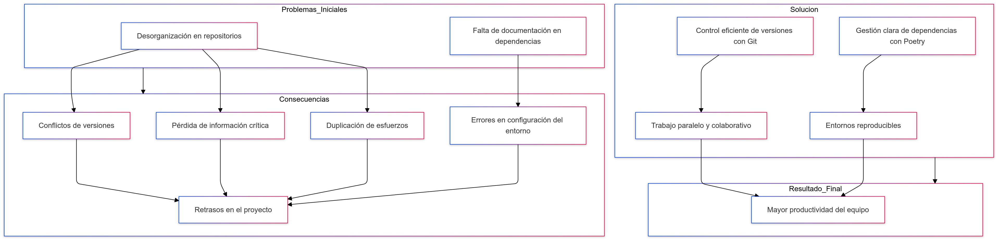
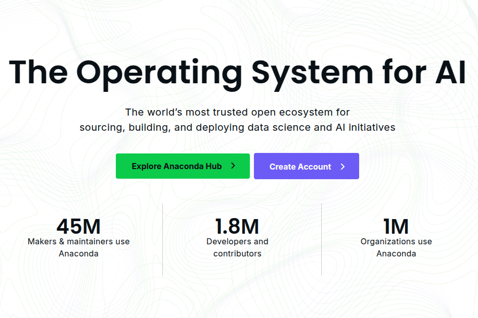
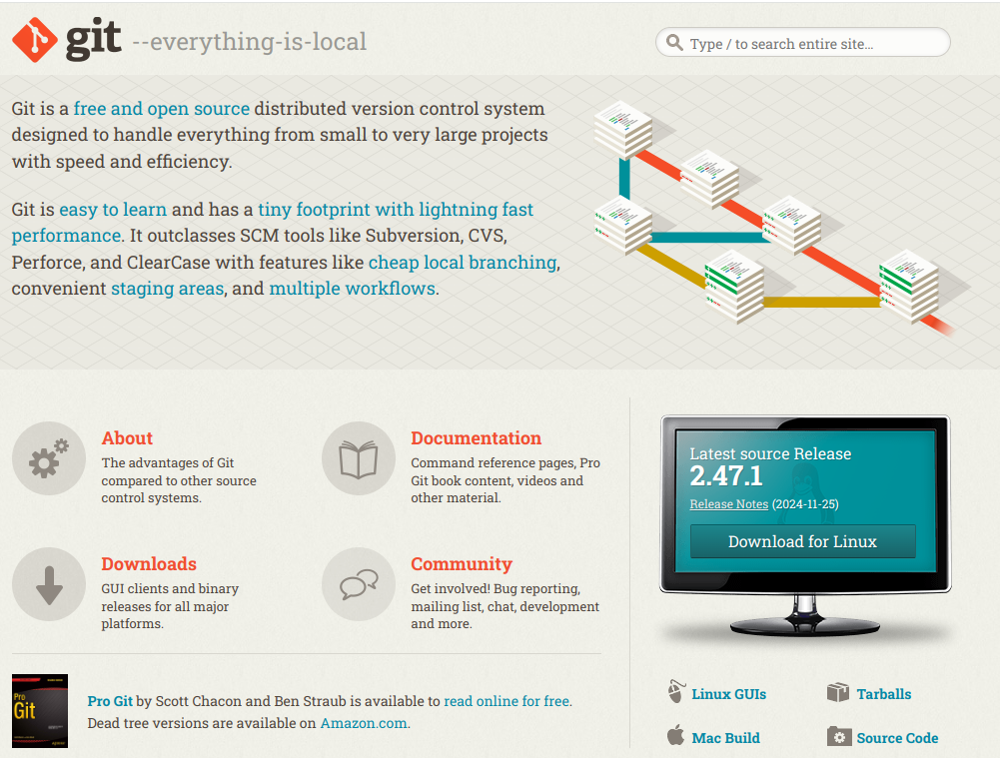
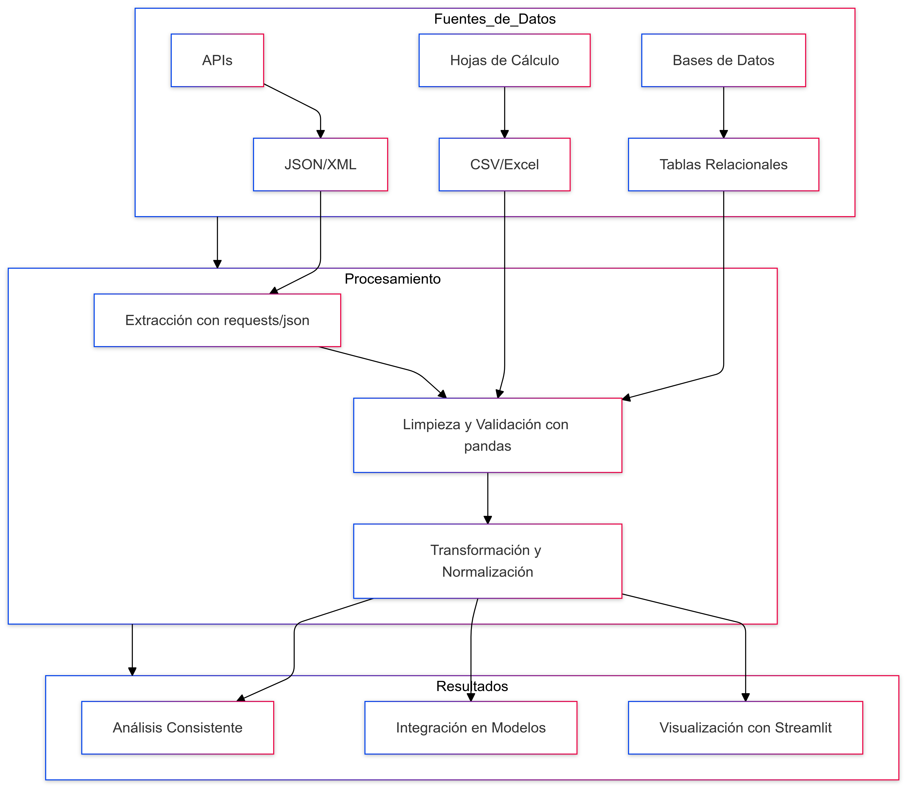

Clase 0: Instalación y Configuración del Entorno
Guía paso a paso para preparar tu entorno de desarrollo y asegurar una base sólida para el éxito en el diplomado.
1. ¿Por Qué un Entorno Estandarizado?
En el desarrollo de software y la ciencia de datos, la falta de un entorno organizado conduce a problemas como conflictos de versiones, duplicación de esfuerzos y errores de configuración. Un entorno estandarizado, utilizando herramientas como Git y Poetry, nos permite evitar estos problemas y fomenta un trabajo colaborativo y reproducible.
2. Herramientas de Software Esenciales
A continuación, detallamos las herramientas que forman la base de nuestro entorno de desarrollo. Cada una cumple un rol fundamental en el ciclo de vida de un proyecto de datos.
Visual Studio Code

Es nuestro editor de código principal. Su flexibilidad, potencia y vasto ecosistema de extensiones lo convierten en la herramienta ideal para escribir, depurar y ejecutar nuestro código Python. Visita la página oficial de descargas para instalarlo.
Extensiones recomendadas:
- Python: Soporte esencial para el desarrollo en Python, incluyendo linting, depuración y autocompletado.
- GitLens: Potencia las capacidades de Git, permitiendo visualizar el historial de cambios línea por línea.
- Markdown All in One: Facilita la creación y previsualización de documentación en formato Markdown.
Conda (Miniconda)
Conda es nuestro gestor de entornos y paquetes. Nos permite crear "cajas de arena" aisladas para cada proyecto, evitando que las dependencias de uno interfieran con otro. Usaremos Miniconda, una versión ligera y rápida. Descárgalo desde la página oficial.
Git
Git es el pilar de nuestro control de versiones. Nos permite registrar cada cambio en nuestro proyecto, colaborar eficientemente con otros y volver a versiones anteriores si algo sale mal. Instálalo desde la página oficial de Git.
3. Configuración del Entorno del Proyecto: Paso a Paso
Ahora que tienes las herramientas base, sigue estos pasos para configurar el entorno específico del diplomado.
Atención usuarios de Windows
Realiza todos los siguientes comandos desde la Anaconda Prompt, que se instala junto con Miniconda. Esto asegurará la correcta configuración de las rutas y el entorno.
Paso 1: Crear y Activar un Entorno Conda
Un entorno virtual aísla las librerías de nuestro proyecto. Crearemos uno llamado diplomado_env con Python 3.10.
# 1. Crear el nuevo entorno
conda create -n diplomado_env python=3.10
# 2. Activar el entorno para empezar a usarlo
conda activate diplomado_envPaso 2: Instalar Poetry y Kernel de Jupyter
Con el entorno activado, instalaremos Poetry para gestionar las dependencias y ipykernel para que VS Code pueda reconocer nuestro entorno en los cuadernos de Jupyter.
pip install poetry ipykernelPaso 3: Clonar el Repositorio del Curso
Todos los materiales del curso están en un repositorio de GitHub. Clónalo en tu máquina local y navega a la nueva carpeta.
# Clona el repositorio desde GitHub
git clone https://github.com/SPMINE-2425/primer_repo_izainea.git
# Ingresa a la carpeta del proyecto
cd primer_repo_izaineaPaso 4: Instalar Dependencias del Proyecto con Poetry
Poetry leerá el archivo pyproject.toml en el repositorio e instalará las versiones exactas de todas las librerías necesarias. Esto garantiza que todos en el diplomado tengamos exactamente el mismo entorno.
poetry install4. ¡Todo Listo!
¡Felicitaciones! Has configurado con éxito tu entorno de desarrollo profesional. Ahora estás preparado para enfrentar cualquier desafío de datos, desde la extracción y limpieza hasta el modelado y la visualización, como se ilustra en el siguiente flujo de trabajo.
